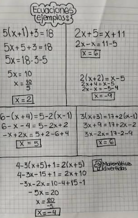

ClaseEcuaciones de primer grado
🤔 Preguntas para pensar
- ¿Qué es una ecuación lineal y cuántas incógnitas puede tener?
- ¿Qué representa un par ordenado (x; y) en el plano cartesiano?
- ¿Qué entienden por un sistema de ecuaciones y qué métodos conocen para resolverlo?
✍️ Ejemplos resueltos
